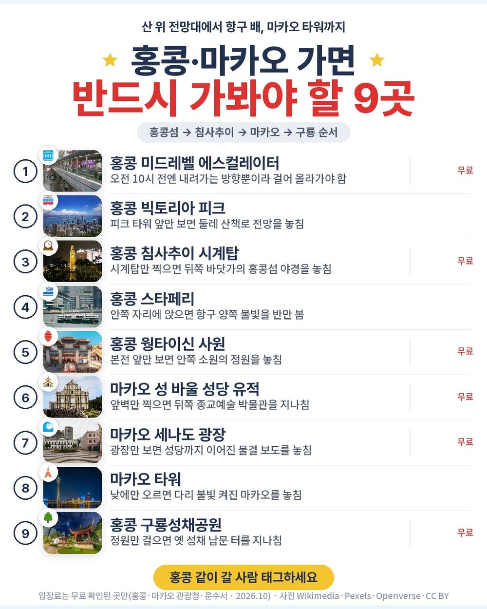
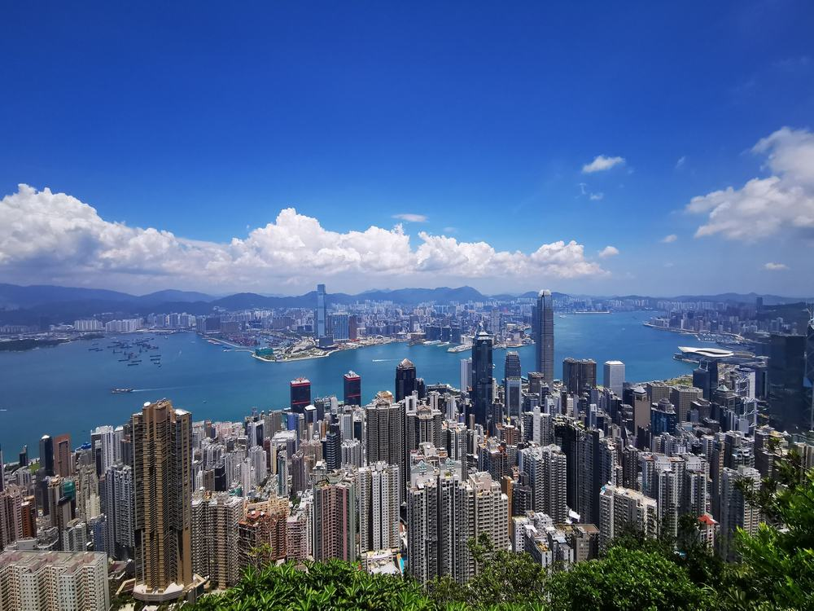
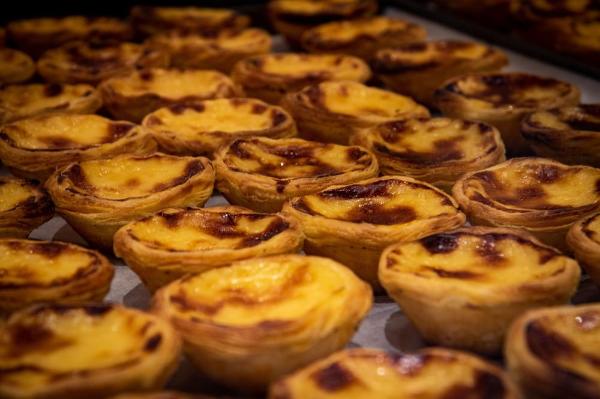
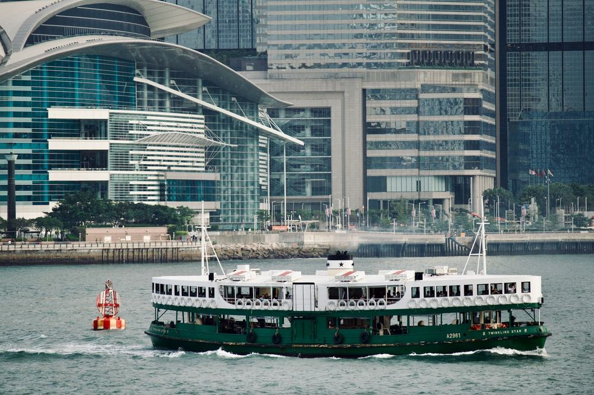
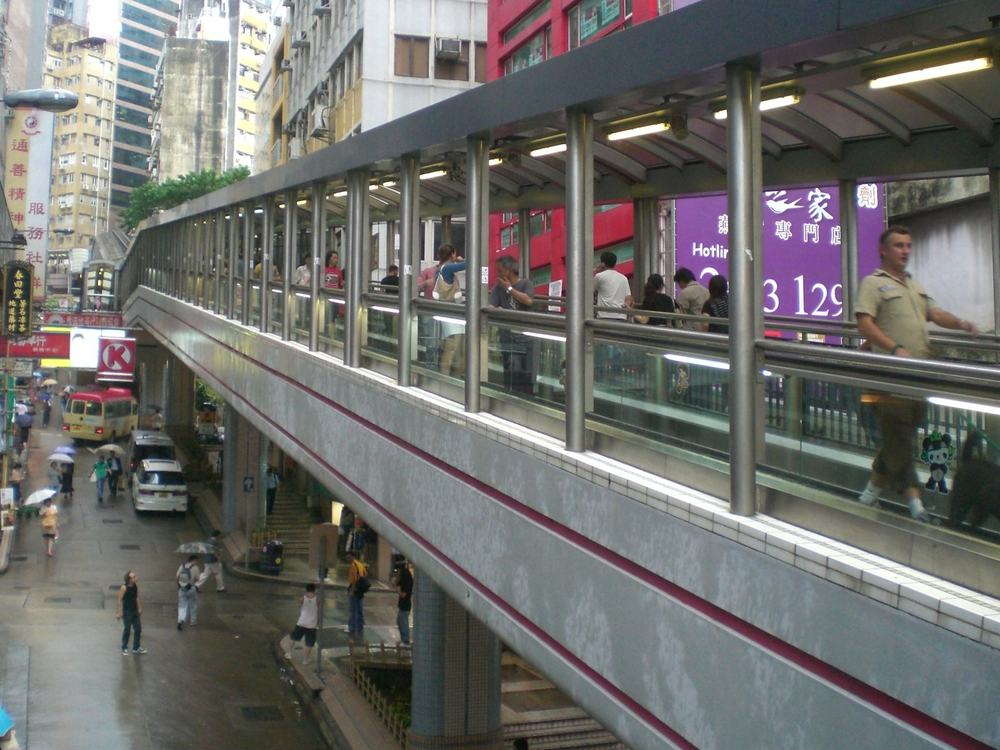
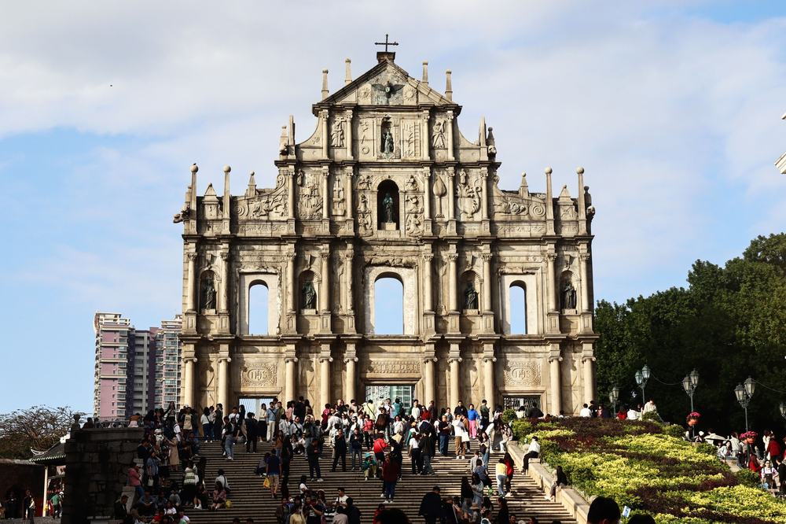
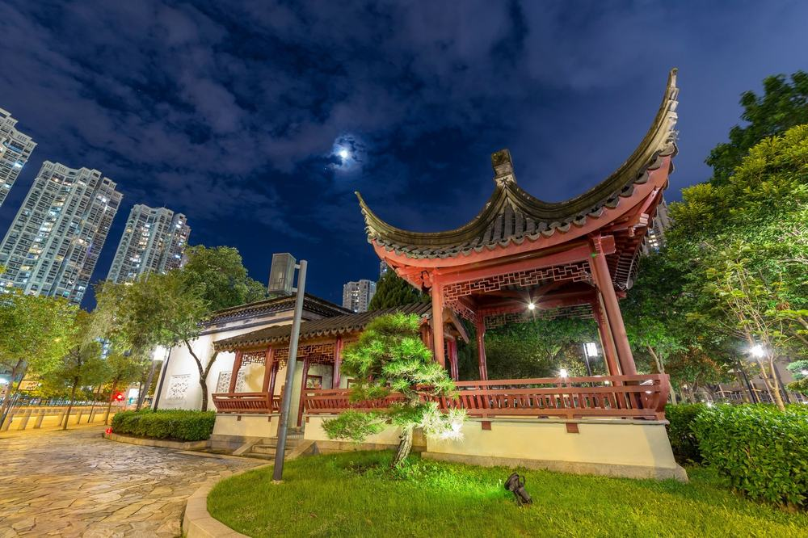
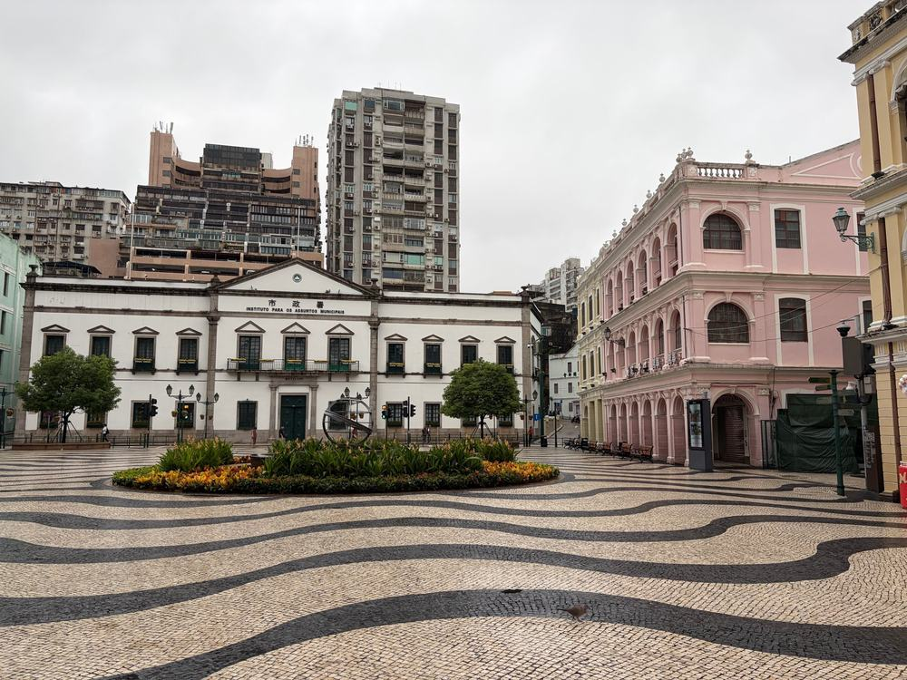

노랑풍선 홍콩 마카오 패키지 여행 132만원대, 대한항공 낮 비행기에 나이트 투어 두 번 넣은 구성

부모님 모시고 홍콩을 알아보다 보면 값싼 상품일수록 밤 비행기가 붙어 있음. 자정 넘어 내리고, 마지막 날은 호텔 없이 새벽에 돌아오는 식임.
그러다 노랑풍선 상품이 눈에 들어옴. 비행기가 대한항공 아침 출발, 오후 귀국이고, 홍콩과 마카오 나이트 투어가 둘 다 상품가 안에 들어 있음. 대신 값이 높은 편임.
결론 — 추천. 대한항공 낮 비행기 왕복에 선택관광 0개, 스타페리·몽콕 야시장·마카오 타워 전망대·윈 호텔 분수쇼까지 포함임. 다만 값을 먼저 보는 분, 쇼핑센터(3회) 방문이 싫은 분, 호텔이 시내 한복판이어야 하는 분은 아님.
132만 9,900원이 어디에 들어갔는지, 현지에서 더 내는 돈은 얼마인지 원문을 하나씩 뜯어봤음.
| 항목 | 내용 |
|---|---|
| 가격 | 1인 1,329,900원 (성인 · 10월 말 출발 기준) |
| 여행사 | 노랑풍선 |
| 항공 | 대한항공 직항 · 인천 아침 출발 → 홍콩 낮 도착 / 귀국은 낮 출발 → 인천 오후 도착 |
| 숙소 | 시외 4성급 3박 · 호텔 미정(출발 2일 전 문자 안내) |
| 일정 | 3박 4일 · 전용 버스 · 한국어 가이드 · 식사 8회 · 쇼핑 3회 · 선택관광 0 |
| 가는 곳 | 소호·미드레벨 · 빅토리아 피크 · 1881 헤리티지 · 스타페리 · 몽콕 야시장 · 웡타이신 · 성 바울 · 세나도 광장 · 베네시안 · 마카오 타워 · 구룡성채공원 · 고궁박물관 |
▶ 내 출발일 오늘 기준 요금 확인 (제휴 링크 · 예약 시 수수료를 받으며 가격은 같습니다)
▶ 10월 13일 기준 홍콩 패키지 최저 57만 9천원부터 — 출발일별 값 한 화면에: 비교 페이지
| 순서 | 다루는 것 | 한 줄 결론 |
|---|---|---|
| 1 | 구성 뜯어보기 | 선택관광 0, 현지 추가금은 가이드 경비 40달러뿐 |
| 2 | 일정 살펴보기 | 1일차가 도착 당일 오후부터 밤 투어까지 가장 꽉 참 |
| 3 | 자유여행 VS 패키지 | 직접 짜면 89만원 | 패키지가 50만원쯤 더 들고, 그 값에 국적기 낮 비행기·가이드·두 도시 이동 |
1. 구성 뜯어보기
요약 — 대한항공 왕복·시외 4성 3박·식사 8회·관광 입장·나이트 투어 2회·가이드·전용 버스·보험이 들어 있음. 선택관광은 0, 쇼핑은 3회, 현지에서 더 내는 건 가이드·기사 경비 1인 40달러임.
1-1. 132만 9,900원에 들어 있는 것

포함 항목을 정리하면 이럼.
- 대한항공 직항 왕복 항공권 + 인천·현지 공항세
- 시외 4성급 호텔 3박 (2인 1실)
- 식사 8회 + 에그타르트 1인 1개
- 관광 입장 · 전용 버스 · 한국어 가이드
- 여행자보험
밤 일정 두 개가 이름을 달고 들어 있음.
- 홍콩 나이트 투어 — 스타페리 + 2층 버스 + 몽콕 야시장 + 전통음료 1잔
- 마카오 나이트 투어 — 마카오 타워 전망대 + 윈 호텔 분수쇼
이 상품의 차별점은 비행기 시간과 밤 투어임. 아침 8시대에 떠나 점심 전에 내리니 첫날 오후를 통째로 쓰고, 보통 선택관광으로 따로 내는 밤 투어가 처음부터 들어 있음.
출발일별 요금 확인하기
https://naver.me/xB7Wpsro
1-2. 식사 여덟 번, 비는 끼니 없음

식사는 8회임. 1일차 저녁부터 4일차 아침까지 비는 끼니가 없고, 1일차·4일차 점심은 기내식임. 현지식이 대부분이고 한식은 3일차 저녁 한 번.
자유식이 없어서 현지에서 끼니값이 따로 나가지 않음. 다만 한식이 한 번뿐이라 현지 음식이 걱정되면 김·고추장 정도는 챙기는 게 좋음(원문 준비물에도 반찬이 적혀 있음).
1-3. 호텔

호텔은 아직 미정이고 출발 2일 전까지 문자로 알려 줌. 예정 호텔은 하버 플라자 노스 포인트, 코지 하버뷰, 돌셋 쿤통, 이지 츈완, 코지 오아시스 또는 동급이고 전부 시외 4성급임.
침사추이에서 약 20~40분, 공항에서 약 40분 거리임. 일정 중엔 전용 버스로 다니니 불편은 적은데, 저녁에 따로 시내로 다시 나가기엔 먼 편임. 홍콩 호텔은 일회용 세면도구와 생수를 주지 않으니 칫솔·샴푸를 챙겨야 함.
1-4. 현장에서 더 낼 돈
| 항목 | 금액 | 비고 |
|---|---|---|
| 가이드·기사 경비 | 약 107,000원 | 1인 40달러 × 2 (성인·아동 같음) |
| 선택관광 | 0원 | 선택관광 없음 |
| 식사 | 0원 | 자유식 없음 (1·4일차 점심 기내식) |
| 나이트 투어 | 0원 | 홍콩·마카오 둘 다 포함 |
| 합계 (2인) | 약 107,000원 | 상품가 265만 9,800원 + 약 11만원 = 약 277만원 |
두 사람이면 약 277만원, 한 사람으로 치면 약 139만원임. 환율은 1달러 약 1,341원으로 잡았음. 혼자 방을 쓰면 싱글 요금 27만원이 더 붙음.
1절 자주 나오는 질문
Q. 선택관광은 정말 없나요?
A. 없음. 선택관광 항목이 '없음'으로 적혀 있고, 보통 선택관광으로 파는 스타페리·야시장·마카오 타워 야경이 기본 일정에 들어 있음.
Q. 쇼핑은 몇 번인가요?
A. 3회임. 찻집 1시간, 보석샵 1시간, 잡화점 30분이고 2일차 오전에 두 곳, 4일차 오전에 한 곳임. 사는 건 자유이고, 버스 안 기념품 판매는 이 횟수에 안 들어감.
Q. 가이드 경비는 따로 내나요?
A. 냄. 1인 40달러를 현지에서 냄. 성인·아동 같음. 그 밖에 정해진 추가금은 없음.
2. 일정 살펴보기
요약 — 1일차 낮 도착 뒤 소호·피크·침사추이·나이트 투어, 2일차 웡타이신·쇼핑 뒤 마카오 세계유산과 마카오 타워, 3일차 구룡성채공원·서구룡·K11, 4일차 쇼핑 한 곳 뒤 낮 비행기로 귀국.
2-1. 하루하루 어디를 가나

| 일차 | 가는 곳 | 식사 | 숙소 |
|---|---|---|---|
| DAY 1 | 인천 08:10 출발 → 홍콩 11:20 도착 → 소호·미드레벨 에스컬레이터 → 타이쿤 → 빅토리아 피크(피크트램 편도) → 1881 헤리티지 → 시계탑 → 나이트 투어(스타페리·2층 버스·몽콕 야시장) | 중 기내식 · 석 현지식 | 시외 4성 |
| DAY 2 | 웡타이신 사원 → 쇼핑 2곳 → 마카오 이동 → 성 바울 성당 → 세나도 광장 → 육포/쿠키거리 → 베네시안 → 윈 호텔 분수쇼 → 마카오 타워 전망대 → 홍콩 복귀 | 조 호텔식 · 중 현지식 · 석 현지식 | 시외 4성 |
| DAY 3 | 구룡성채공원 → M+(외관) → 고궁박물관 → 침사추이 K11(자유 관람) | 조 호텔식 · 중 현지식 · 석 한식 | 시외 4성 |
| DAY 4 | 조식 → 쇼핑 1곳 → 공항 → 홍콩 12:35 출발 → 인천 17:05 도착 | 조 호텔식 · 중 기내식 | — |
| 일차 | 버스 이동 | 걷기 | 포함 식사 |
|---|---|---|---|
| DAY 1 | 약 2시간 | 중상 | 중 기내식 · 석 현지식 |
| DAY 2 | 약 3시간 | 보통 | 조 호텔식 · 중 현지식 · 석 현지식 |
| DAY 3 | 약 1.5시간 | 보통 | 조 호텔식 · 중 현지식 · 석 한식 |
| DAY 4 | 약 1시간 | 적음 | 조 호텔식 · 중 기내식 |
| 합계 | 약 7.5시간 | - | 8끼 (현지식 4 · 호텔식 3 · 한식 1) + 기내식 2 |
요약 — 버스 이동은 4일 동안 약 7.5시간, 포함 식사는 8끼(현지식 4 · 호텔식 3 · 한식 1)에 기내식 2번임. 가장 많이 걷는 날은 DAY 1임.
2-2. 1일차 — 내린 날 오후부터 밤까지

11시 20분에 내리면 바로 홍콩섬으로 감. 소호 골목과 미드레벨 에스컬레이터, 옛 경찰서를 바꾼 타이쿤을 걷고 빅토리아 피크에 오름. 피크트램은 편도 한 번이고 나머지는 전용 버스임.
침사추이로 건너와 1996년까지 해경 본부였던 1881 헤리티지와 바닷가 시계탑을 보고, 밤엔 스타페리로 항구를 건넌 뒤 2층 버스로 몽콕 야시장까지 감. 도착 당일이 가장 긴 날이라 첫날은 편한 신발이 필수임.
2-3. 2일차 — 웡타이신, 그리고 마카오의 낮과 밤

아침에 도교·불교·유교를 함께 모신 웡타이신 사원을 보고, 쇼핑 두 곳(찻집·보석)을 들른 뒤 마카오로 건너감. 원문 공지로는 11월 1일 출발부터 웡타이신 대신 마카오 몬테 요새·성 도미니크 성당으로 바뀜.
마카오에선 성 바울 성당 유적, 물결무늬 돌바닥의 세나도 광장, 시식이 자유로운 육포/쿠키거리, 실내 운하가 있는 베네시안을 돎. 밤엔 윈 호텔 앞 분수쇼를 보고 마카오 타워 전망대에 오름. 타워 높이는 338m, 전망대는 223m에 있음. 숙박은 다시 홍콩임.
2-4. 3일차 — 구룡성채와 서구룡

구룡성채공원은 옛 성채 자리를 정원으로 바꾼 곳이라 조용히 걷기 좋음. 이어서 서구룡 바닷가의 M+ 미술관을 겉에서 보고 고궁박물관에 들어감. 고궁박물관이 쉬는 화요일엔 M+ 안 전시로 바뀜.
오후엔 침사추이 K11을 자유롭게 둘러보고, 저녁은 이번 일정 유일한 한식임.
2절 자주 나오는 질문
Q. 많이 걷나요?
A. 1일차가 가장 많이 걸음. 소호 골목·침사추이 산책로·몽콕 야시장이 다 이날임. 대신 언덕은 에스컬레이터, 산은 피크트램, 항구는 스타페리로 건너서 오르막을 걷는 구간은 짧음.
Q. 비행기는 몇 시인가요?
A. 대한항공 직항이고 인천 08:10 출발 → 홍콩 11:20 도착, 귀국은 홍콩 12:35 출발 → 인천 17:05 도착임(원문 기준). 다른 항공편 손님과 합류하는 연합상품이라 홍콩 공항에서 잠깐 기다릴 수 있음.
Q. 준비할 건 뭔가요?
A. 콘센트가 영국식 3구라 멀티 어댑터가 필요함. 전자담배는 반입만으로 압수·벌금 대상이라 두고 가야 함. 10월 홍콩 평균 기온은 약 25.6도, 11월은 약 22.1도(홍콩 천문대 평년값)임.
3. 자유여행 VS 패키지 | 직접 짜면 89만원
요약 — 같은 일정을 직접 짜면 1인 89만원쯤 듦. 패키지는 가이드 경비를 더해 약 138만원이라 50만원쯤 더 들고, 그 값에 대한항공 낮 비행기·가이드·전용 버스·마카오 왕복·나이트 투어 두 번이 들어 있음.
3-1. 같은 일정을 직접 짜면

같은 일정을 혼자 짠다고 치고 항목별로 계산해 봄. 10월 말 출발, 2인 1실 1인분임. 항공 말고는 추정치라 근거 열에 적어 둠.
| 항목 | 금액 | 근거 |
|---|---|---|
| 인천–홍콩 왕복 항공 | 386,000원 | ICN↔HKG 직항 왕복 1인 38만 6천원 (패키지와 같은 날 출발 · 2026-10-13 마이리얼트립 조회 · 저비용 항공 운임) |
| 호텔 3박 | 200,000원 | 시외 4성 2인 1실 1박 약 13만원대의 1인분 × 3 (추정) |
| 식사 8회 | 120,000원 | 현지식 위주 (추정) |
| 공항 이동 | 40,000원 | 공항 ↔ 호텔 왕복 (추정) |
| 마카오 왕복 배 | 60,000원 | 홍콩 ↔ 마카오 고속 페리 왕복 (추정) |
| 피크트램·스타페리·2층 버스 | 25,000원 | 시내 교통 묶음 (추정) |
| 마카오 타워 전망대 | 30,000원 | 현지 판매가 기준 (추정) |
| 여행자보험 · 유심 | 25,000원 | 4일 기준 |
| 가이드 | — | 자유여행은 없음 |
| 합계 | 약 886,000원 |
직접 짜실 분은 이 날짜 항공권부터 보세요 — https://myrealt.rip/vJWk7a (마이리얼트립 제휴 링크)
패키지는 1,329,900원에 가이드 경비 40달러를 더해 약 138만원임.
3-2. 그래서 뭐가 다른가
직접 짜는 쪽이 50만원쯤 덜 들지만, 항공이 저비용 항공 기준임. 대한항공 낮 비행기로 맞추면 항공권부터 값이 올라감.
- 홍콩 ↔ 마카오 페리와 마카오 안 이동을 직접 챙겨야 함
- 피크 → 침사추이 → 몽콕으로 이어지는 첫날 동선을 직접 짜야 함
- 마카오 타워 전망대·분수쇼 시간에 맞춰 밤 이동을 따로 해결해야 함
패키지는 이 전부가 전용 버스 한 대로 붙고, 한국어 가이드가 붙음. 자유여행 계산표에 가이드 행이 비어 있는 게 그 뜻임 — 0원이 아니라 살 수 없는 것임.
3-3. 어느 쪽이 맞나
| 자유여행이 맞음 | 패키지가 맞음 |
|---|---|
| 한 푼이라도 아끼는 게 우선임 | 국적기 낮 비행기가 편함 |
| 홍콩 지하철·페리가 익숙함 | 두 도시 이동을 맡기고 싶음 |
| 쇼핑센터 일정이 싫음 | 밤 투어까지 한 번에 보고 싶음 |
| 시내 호텔에서 밤에 따로 다니고 싶음 | 부모님과 무리 없이 돌고 싶음 |
3절 자주 나오는 질문
Q. 자유여행이 더 싸지 않나요?
A. 계산해 보면 자유여행이 약 89만원, 패키지가 가이드 경비를 더해 약 138만원임. 다만 자유여행 항공은 저비용 항공 값이라, 대한항공 낮 비행기로 맞추면 차이가 줄어듦.
Q. 같은 홍콩·마카오인데 더 싼 패키지도 있지 않나요?
A. 있음. 60만원대 홍콩·마카오 상품도 있음. 대신 그런 상품은 밤 비행기이거나 일정이 2박이 많아서, 비행기 시간을 우선할지 값을 우선할지로 고르면 됨.
Q. 마카오에 가려면 따로 준비할 게 있나요?
A. 일반 여권이면 비자 없이 들어감. 일정상 마카오를 다녀와 홍콩에서 자니 짐은 호텔에 두고 가볍게 다녀오면 됨.
마무리
정리하면 이럼.
추천함. 132만 9,900원에 대한항공 낮 비행기 왕복, 시외 4성 3박, 식사 8회, 피크트램·스타페리·몽콕 야시장·성 바울·마카오 타워 전망대·구룡성채공원이 들어 있음. 선택관광이 없고, 현지에서 더 내는 건 가이드 경비 40달러임.
이런 분은 고르면 안 됨. 값을 먼저 보는 분, 쇼핑센터(3회) 방문 자체가 싫은 분, 호텔이 시내 한복판이어야 하는 분.
| 맞는 사람 | 안 맞는 사람 |
|---|---|
| 밤 비행기가 힘듦 | 값이 우선임 |
| 선택관광 권유가 싫음 | 쇼핑센터가 싫음 |
| 홍콩·마카오를 처음 한 번에 봄 | 시내 호텔이어야 함 |
걸리는 점이 있긴 한데 상품 흠이라기보다 맞는 사람과 안 맞는 사람을 가르는 조건에 가까움.
오늘 기준 출발일별 요금 보기
https://naver.me/xB7Wpsro
같은 목적지 다른 여행사 패키지, 쇼핑·선택관광·가이드 경비까지 비교
https://pkg-lab.com/go/?q=%ED%99%8D%EC%BD%A9&utm_source=blog&utm_medium=post&utm_campaign=daily
함께 보면 좋은 글
편한여행사 다낭 패키지 여행 94만원대, 바나힐에 쇼핑 0번 옵션 0개 진짜일까
https://blog.naver.com/robotnady10/224438633760
모두투어 하와이 패키지 여행 323만원대, 와이키키 오션프런트 4박에 랍스터까지?
https://blog.naver.com/robotnady10/224437709369
이 글에는 네이버·마이리얼트립 제휴 링크가 포함되어 있으며, 링크를 통해 예약하시면 일정 수수료를 받습니다. 가격은 동일합니다. 가격과 구성은 2026년 10월 13일 확인 기준이며 출발일에 따라 달라질 수 있습니다.
▶ 이 상품, 영상으로 보기 (유튜브)
▶ 홍콩 패키지 오늘 값 나란히 비교
▶ 같은 목적지 다른 여행사 패키지, 쇼핑·선택관광·가이드 경비까지 비교: pkg-lab.com
사진 출처 (저작자 · 라이선스):
HK Central Cochrane Street Central-Mid-Levels escalators 1 — CC BY-SA 3.0 (Wikimedia Commons) 원본

그 밖의 사진: Pexels
쇼츠·클립 영상과 사진:
Hong Kong's Central Mid-Levels Escalator System — Escape from Custody (YouTube, CC BY) 원본
Stairway to the Ruins of St. Paul's in Macau [CC] — Medulla Oblongata (YouTube, CC BY) 원본
Hong Kong City Night View from Victoria Peak — Baudhayan Lahiri (YouTube, CC BY) 원본
Tsim Sha Tsui, Clock Tower — CC BY-SA 3.0 (Wikimedia Commons) 원본